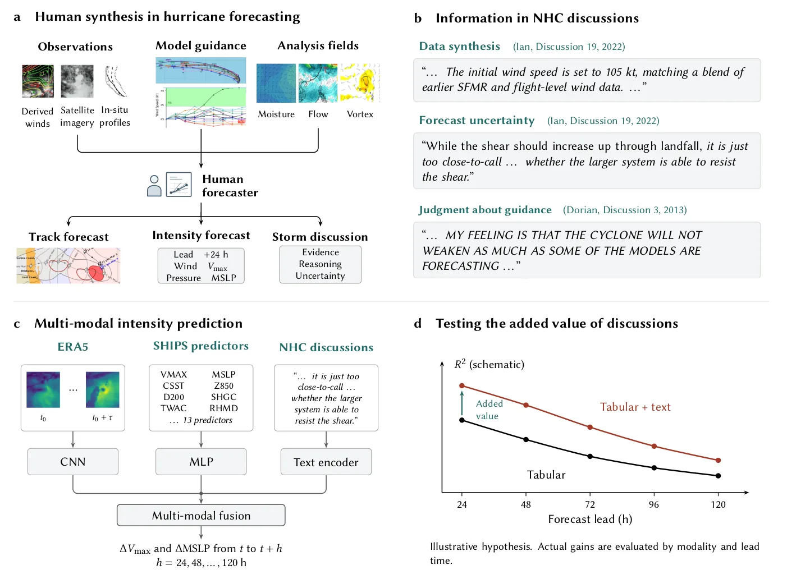
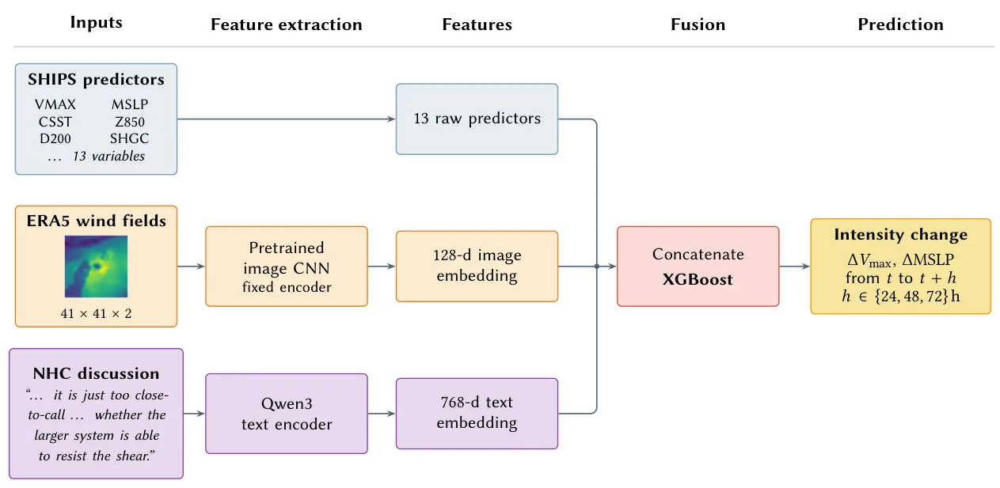
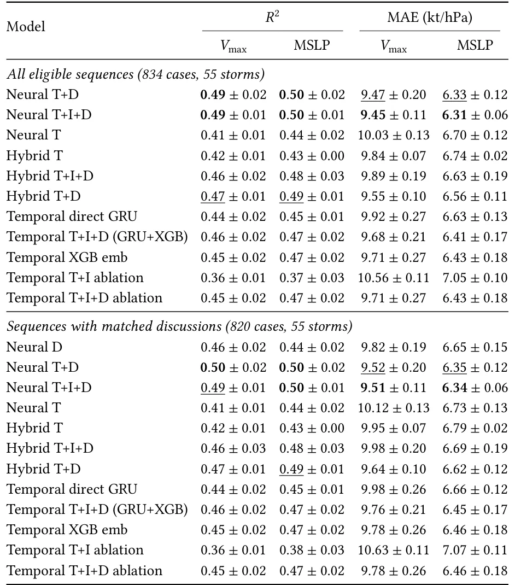
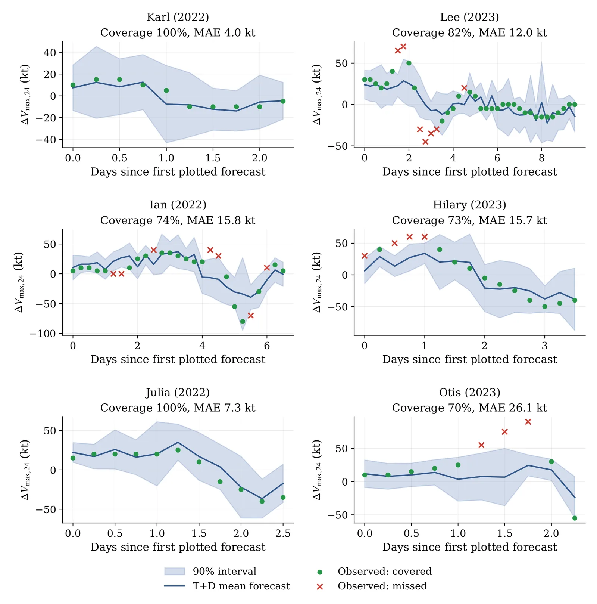

A sinergia entre intuição humana e dados numéricos
A previsão da intensidade de ciclones tropicais (furacões, tufões) é um dos problemas mais desafiadores da meteorologia operacional. Diferentemente da trajetória, que tem melhorado consistentemente, a previsão de quão forte um furacão se tornará depende de processos complexos e não lineares que interagem em múltiplas escalas. Modelos tradicionais, como o SHIPS (Statistical Hurricane Intensity Prediction Scheme), usam regressão linear sobre variáveis ambientais como temperatura do mar e cisalhamento do vento. Modelos dinâmicos, como o GFDL, tentam simular a física da atmosfera e do oceano. No entanto, nenhum desses sistemas captura perfeitamente a complexidade real.
Os meteorologistas do Centro Nacional de Furacões dos EUA (NHC) escrevem documentos chamados "Tropical Cyclone Discussions" para cada tempestade ativa. Esses textos não são apenas resumos; eles sintetizam observações, guiam a interpretação de modelos numéricos e expressam o julgamento especializado dos previsores sobre incertezas. Este paper, da Universidade de Lausana, investiga se esse texto contém informação preditiva útil que vai além dos dados numéricos já disponíveis. A hipótese central é que a linguagem natural carrega nuances sobre a estrutura da tempestade e a confiança do previsores que os números sozinhos perdem.

Uma abordagem multimodal: texto, números e imagens
Os autores propõem o framework MultiCyclone, que integra três modalidades de dados: tabular, espacial (imagens/campos) e textual. Para os dados tabulares, utilizam os 13 preditores do SHIPS, que incluem varições de temperatura da superfície do mar, umidade relativa e cisalhamento do vento. Para a modalidade espacial, usam campos de vento de 10 metros do reanálise ERA5, processados por uma CNN (Rede Neural Convolucional) pré-treinada para prever o próximo quadro temporal, gerando embeddings fixos de 128 dimensões. Para a modalidade textual, processam as discussões do NHC usando um codificador de sentenças Qwen3, gerando embeddings de 768 dimensões.
A arquitetura de fusão é híbrida. Os preditores tabulares podem ser alimentados diretamente em um modelo XGBoost ou em uma rede neural. Os embeddings de imagem e texto são combinados com os dados tabulares usando concatenação ou atenção multi-head, dependendo do tempo de previsão (lead time). O objetivo final é prever a mudança na velocidade máxima sustentada do vento (Vmax) e na pressão central mínima (MSLP) para horizontes de 24, 48, 72, 96 e 120 horas. O estudo analisa 637 ciclones no Atlântico e no leste do Pacífico Norte entre 2002 e 2023.
A ablação de modalidades: o que realmente importa?
Para entender o valor real de cada fonte de dados, os autores realizam experimentos de ablação, removendo sistematicamente uma modalidade por vez. O resultado mais significativo ocorre na previsão de 24 horas. Quando apenas os preditores tabulares (SHIPS) são usados, o Mean Absolute Error (MAE) para a mudança de vento é de 10,13 nós. Ao adicionar as discussões textuais (modelo T+D), o erro cai para 9,46 nós, uma redução de 6,6%. O coeficiente de determinação (R²) para o vento aumenta de 0,44 para 0,53. Isso indica que o texto contém informação preditiva robusta e complementar aos dados ambientais estáticos.
Surpreendentemente, a adição dos campos de vento espacial (imagens ERA5) oferece ganhos mínimos para a previsão de intensidade a 24 horas. No modelo que já inclui texto e dados tabulares, adicionar as imagens reduz o MAE apenas de 9,46 para 9,45 nós, uma diferença dentro da variação natural do treinamento. Isso contrasta com estudos anteriores focados em previsão de trajetória, onde imagens satelitais são cruciais. Para intensidade, a síntese textual do meteorologista parece capturar informações estruturais que as imagens brutas, neste contexto específico de reanálise, não adicionam de forma significativa.

Análise do sinal textual: o que os meteorologistas dizem?
Os autores investigaram quais partes do texto são mais importantes para a previsão. Usando atribuição por gradientes integrados e uma linha de base TF-IDF, descobriram que palavras relacionadas à intensidade e sua evolução, como "intensify" (intensificar), "weaken" (enfraquecer), "eyewall" (parede do olho) e "category" (categoria), têm alta importância para as previsões do modelo. Experimentos de perturbação de texto mostraram que mascarar frases contendo esse vocabulário específico reduz drasticamente o R² do modelo de texto puro (de 0,50 para 0,13 aproximadamente, dependendo da configuração).
Isso sugere que o modelo não está apenas aprendendo ruído estatístico, mas está capturando o conteúdo semântico das avaliações dos previsores. No entanto, os autores alertam que isso não prova causalidade direta. As discussões são escritas pelo menos três horas após o tempo válido dos outros dados de entrada (SHIPS e ERA5). Isso significa que o modelo pode estar aprendendo correlações temporais onde o texto reflete uma observação já ocorrida, em vez de uma previsão prospectiva pura. O texto atua como um mecanismo de correção e refinamento baseado no estado atual da tempestade, validado pela experiência humana.
Incerteza e o desafio da intensificação rápida
Uma parte crucial deste trabalho é a quantificação de incerteza. Previsões pontuais não são suficientes para a tomada de decisão em desastres. Os autores testaram vários métodos de calibração de intervalos de previsão, incluindo Bootstrap (resampling de tempestades inteiras), Adaptive Conformal Inference e EnbPI. O objetivo era atingir uma cobertura de 90% para os intervalos de previsão, ou seja, 90% das observações reais deveriam cair dentro da faixa prevista pelo modelo.
O resultado revela uma fraqueza significativa: durante episódios de intensificação rápida (rapid intensification), a cobertura cai abaixo do alvo de 90%. Casos extremos, como o furacão Ian e o furacão Otis, foram subestimados pelo modelo. A intensificação rápida é um fenômeno complexo e raro, difícil de capturar tanto para modelos físicos quanto para aprendizado de máquina. Embora o modelo T+D (Tabular + Discussion) tenha o melhor desempenho geral em termos de erro médio, ele ainda luta para quantificar corretamente a incerteza em cenários de alta volatilidade. Isso destaca a necessidade de modelos que aprendam melhor a cauda da distribuição de erros, não apenas a média.

Comparação de arquiteturas: Neural vs. XGBoost vs. Temporal
O paper compara três famílias de modelos: redes neurais end-to-end, modelos híbridos (XGBoost para tabular + embeddings para texto/imagens) e modelos temporais (RNNs/GRUs que consideram sequências de tempo). Para previsões de 24 horas, as redes neurais que combinam dados tabulares e texto (T+D) tiveram o menor erro médio (MAE de 9,46 nós). Modelos híbridos XGBoost com texto tiveram desempenho muito próximo (9,49 nós).
Modelos temporais, que tentam capturar a evolução da tempestade ao longo de uma sequência de quadros, tiveram desempenho inferior nos testes principais, com MAE de 9,68 nós para o mesmo subconjunto de dados. Isso pode indicar que, para previsões de curto prazo (24h), a informação estática do momento atual, refinada pelo texto, é mais poderosa do que a inferência de tendências temporais complexas, especialmente quando os dados temporais são limitados ou ruidosos. A escolha da arquitetura depende do horizonte de previsão e da disponibilidade de dados sequenciais completos.

Limitações e escopo do estudo
É importante destacar as limitações do estudo. A análise se restringe aos bacias do Atlântico e leste do Pacífico Norte, entre 2002 e 2023. Isso pode limitar a generalização para outras bacias oceânicas ou períodos anteriores, onde a qualidade dos dados e a frequência de tempestades podem variar. Além disso, o estudo foca apenas na intensidade, não na trajetória. Os dados de reanálise (ERA5) diferem das análises em tempo real usadas operacionalmente, o que introduz viés retrospectivo.
Outra limitação é a resolução temporal de 6 horas, que pode perder episódios de intensificação rápida de curta duração. O estudo não incorpora outros produtos textuais do NHC, como os Advisories públicos, focando apenas nas discussões técnicas. Os autores enfatizam que os resultados não devem ser interpretados como uma recomendação para implementação operacional imediata, mas sim como uma prova de conceito de que o julgamento humano, quando codificado em texto, carrega sinal preditivo valioso que pode ser extraído por modelos multimodais.
Conclusão: O futuro da previsão multimodal
Este paper demonstra que a linguagem natural dos meteorologistas não é apenas um subproduto da previsão, mas uma fonte rica de informação preditiva. Ao integrar textos de discussões do NHC com dados numéricos e imagens, é possível reduzir significativamente o erro de previsão de intensidade de furacões, especialmente em horizontes de curto prazo. No entanto, a integração multimodal não é uma solução mágica; ela requer arquiteturas cuidadosamente desenhadas e enfrenta desafios significativos na quantificação de incerteza durante eventos extremos.
O trabalho abre caminho para pesquisas futuras em aprendizado multimodal aplicado a ciências climáticas. A questão central deixa de ser "dados vs. humanos" e passa a ser "como combinar dados estruturados, não estruturados e julgamento humano de forma robusta". Para cientistas de dados e meteorologistas, a lição é clara: o contexto textual, quando devidamente processado por modelos de linguagem e fusão de modalidades, pode fechar a lacuna entre a física numérica e a expertise humana, levando a previsões mais precisas e, potencialmente, a uma melhor proteção contra desastres naturais.
O que fica
- O texto das discussões do NHC reduz o erro médio (MAE) de previsão de vento em 6,6% a 24 horas quando adicionado a preditores ambientais padrão.
- Campos de vento espacial (ERA5) oferecem ganho marginal na previsão de intensidade a curto prazo, diferentemente de previsões de trajetória.
- O modelo falha em capturar a intensificação rápida, com intervalos de confiança abaixo do alvo de 90% nesses casos extremos.
- O estudo é retrospectivo e não operacional, pois as discussões são publicadas após o tempo válido dos outros dados de entrada.
Paper original: Quantifying the added value of human forecaster discussions for tropical cyclone intensity prediction
Comentários
Nenhum comentário ainda. Seja o primeiro.